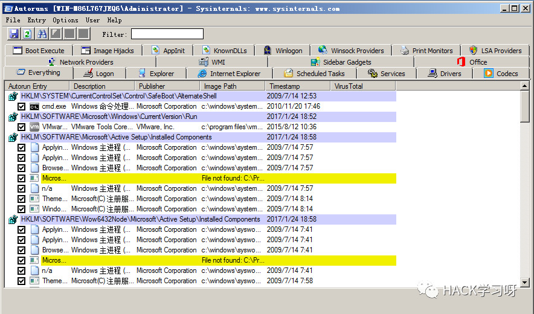
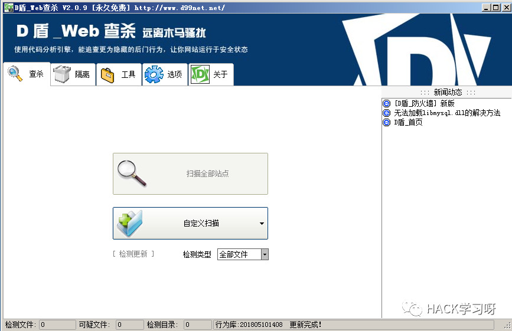
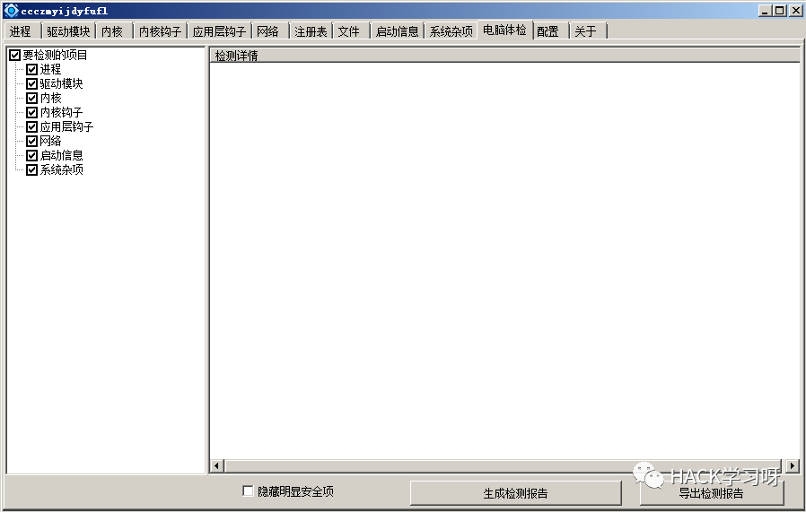
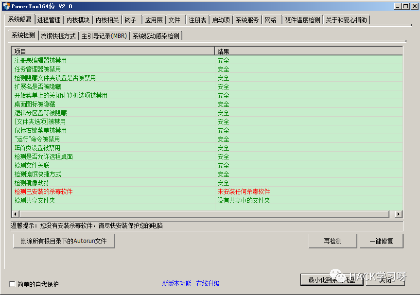
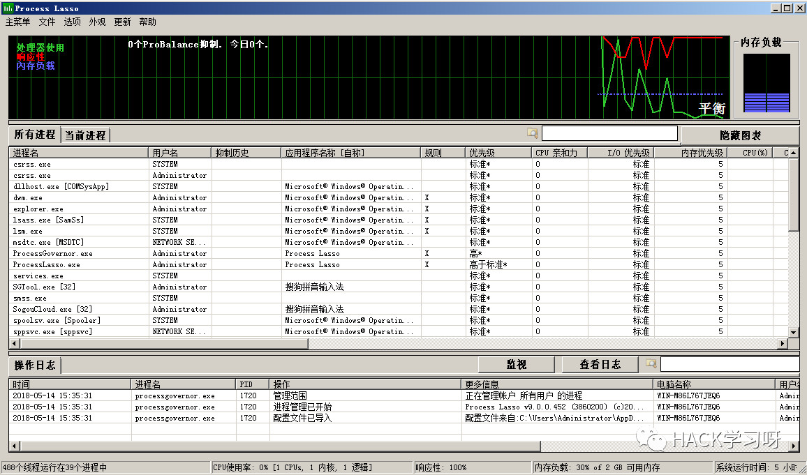
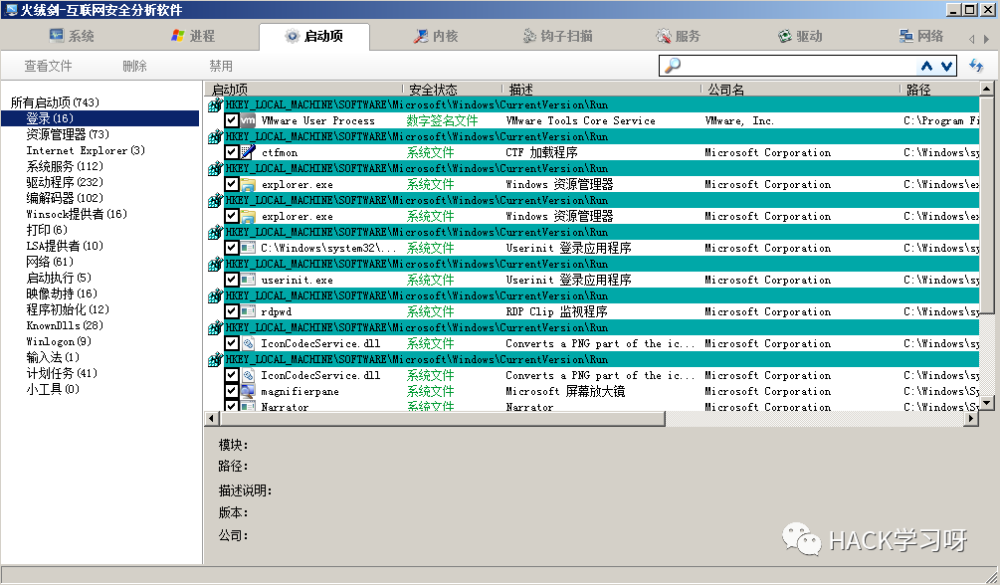
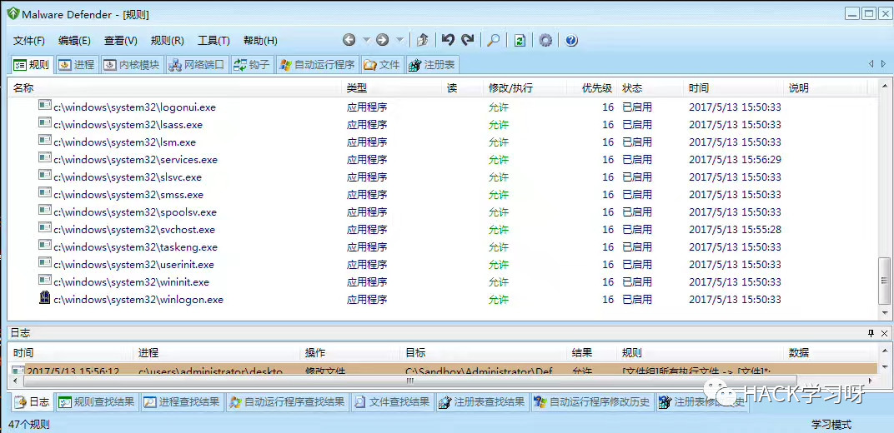
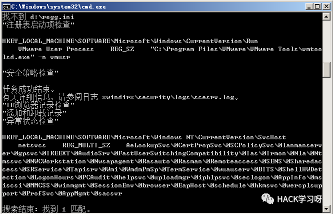
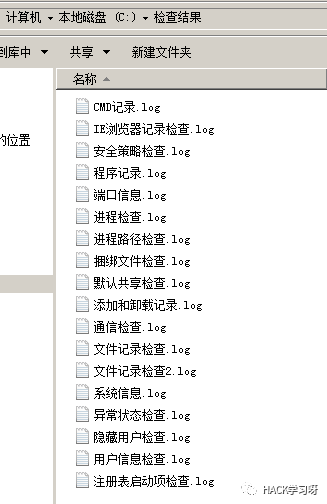

Windows安全应急--多种安全工具的介绍
1. Autoruns
介绍：
AutoRuns是一款项目管理工具，它可以查看“资源管理器”，“IE浏览器”，“计划任务”，“驱动等等”，
通常用它来查看异常进程

下载地址：
https://filehippo.com/zh/download_autoruns2. D盾
介绍：
D盾是一款webshell查杀工具，通常使用它来扫描网站webshell，同时也可以扫描隐藏文件

下载地址：
http://www.d99net.net/
3. PCHunter
介绍：
PC Hunter是一个Windows系统信息查看软件，同时也是一个手工杀毒辅助软件。
在应急响应中常常要用到它

下载地址：
http://www.xuetr.com/
4. PowerTool
介绍：
PowerTool也是一款手工杀毒辅助，进程管理辅助工具。

下载地址：
https://www.portablesoft.org/
5. Process Lasso
介绍：
Process Lasso也是一款优秀的进程管理辅助工具，它同时可以监视进程动作。

下载地址：
http://www.processlassopro.com/
6. 火绒剑
介绍：
火绒剑也是一款优秀的进程管理分析工具

下载地址：
http://down4.huorong.cn/hrsword.exe
7. Malware Defender
介绍：
Malware可以查看进程，可以记录进程的异常操作，
但是它目前只支持32位操作系统。

下载地址：
https://malware-defender.en.softonic.com/download
8. Windows系统安全检查脚本
介绍：
它可以检查多项记录。
请使用管理员运行，几个检查项需要权限运行


下载地址：
http://www.jb51.net/bat/498789.html
文章来源：blubiu's博客
作者：blubiu
如有侵权，请联系删除